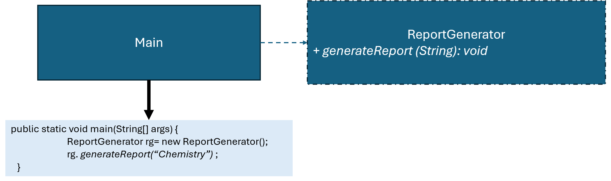

優點
缺點
總評
本次互動主要停留於程式展示與基本設計理念說明，屬於答案導向型態。缺乏追問、檢證、比較、策略調整與深入認知互動，未將 AI 當成認知夥伴，而是將其單純視為知識或答案來源。
interface ReportStrategy {
void generate();
}
class ChemistryReport implements ReportStrategy {
@Override
public void generate() {
System.out.println("Generating Chemistry report");
}
}
class MathematicsReport implements ReportStrategy {
@Override
public void generate() {
System.out.println("Generating Mathematics report");
}
}
class PhysicsReport implements ReportStrategy {
@Override
public void generate() {
System.out.println("Generating Physics report");
}
}
public class ReportGenerator {
private ReportStrategy reportStrategy;
public ReportGenerator() {
}
public void setReportStrategy(ReportStrategy reportStrategy) { this.reportStrategy = reportStrategy; }
public void generateReport() {
reportStrategy.generate();
}
public static void main(String[] args) {
ReportGenerator p = new ReportGenerator();
p.setReportStrategy(new ChemistryReport());
p.generateReport(); // 顯示 "Generating Chemistry report"
p = new ReportGenerator();
p.setReportStrategy(new MathematicsReport());
p.generateReport(); // 顯示 "Generating Mathematics report"
p = new ReportGenerator();
p.setReportStrategy(new PhysicsReport());
p.generateReport(); // 顯示 "Generating Physics report"
}
}
!@#$報告
新設計有何優點?
這段程式示範了策略模式（Strategy Pattern）在報告生成上的應用。`ReportStrategy` 介面定義了一個統一的 `generate()` 方法，不同科目的報告透過實作這個介面來提供各自的生成邏輯，例如 `ChemistryReport`、`MathematicsReport`、`PhysicsReport` 分別對應化學、數學與物理的報告生成。
`ReportGenerator` 是策略模式的上下文（Context），它不直接知道報告內容的細節，而是透過 `setReportStrategy` 注入不同的策略物件。當呼叫 `generateReport()` 時，它會委託目前策略物件執行生成。這種設計讓程式非常靈活，如果未來要新增其他科目的報告，只需新增對應策略類別，不必改動 `ReportGenerator` 本身的程式碼，符合開放封閉原則。
程式執行流程簡單明瞭：先建立 `ReportGenerator` 物件，再依序設定不同科目的策略並呼叫 `generateReport()`。第一次生成化學報告，印出 “Generating Chemistry report”；第二次生成數學報告，印出 “Generating Mathematics report”；第三次生成物理報告，印出 “Generating Physics report”。整個過程展示策略模式如何用統一介面動態切換不同演算法，維護與擴充更方便，程式也更容易理解與管理。
!@#$
請檢視程式碼介面是否違反 Strategy 模式，並撰寫報告，討論新設計有何優點?

1. ReportGenerator p = new ReportGenerator( ); p.setReportStrategy( new ChemistryReport() ) ; p.generateReport(); //顯示 "Generating Chemistry report" 2. ReportGenerator p = new ReportGenerator( ); p.setReportStrategy( new MathematicsReport() ) ; p.generateReport( ); //顯示 "Generating Mathematics report" 3. ReportGenerator p = new ReportGenerator( ); p.setReportStrategy( new PhysicsReport() ) ; p.generateReport( ); //顯示 "Generating Physics report"